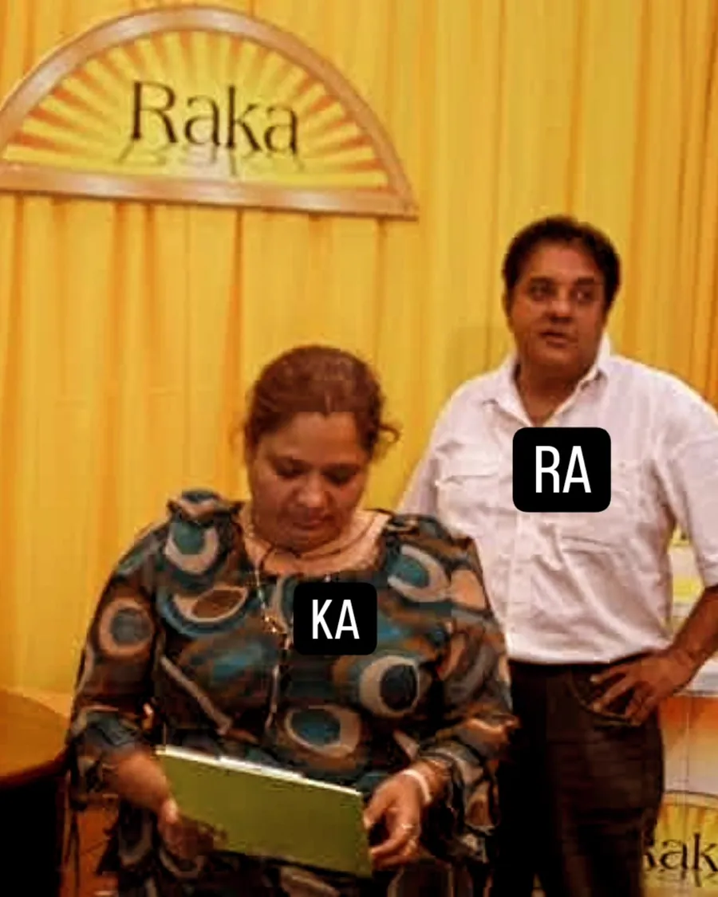
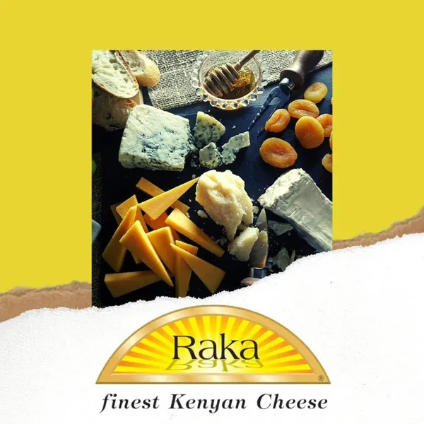
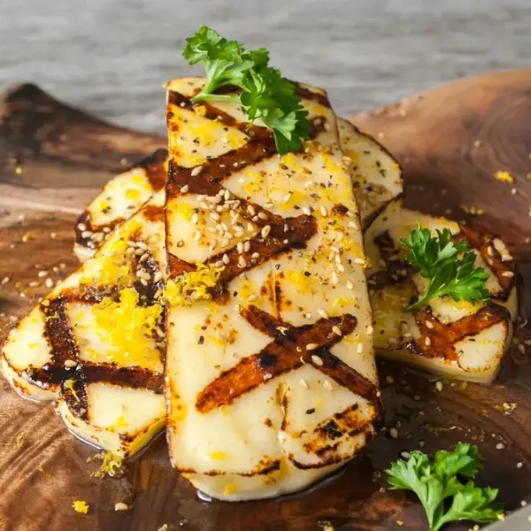
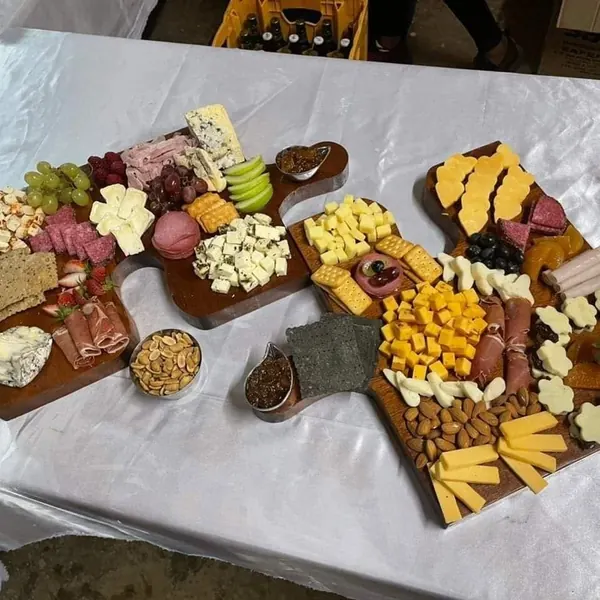
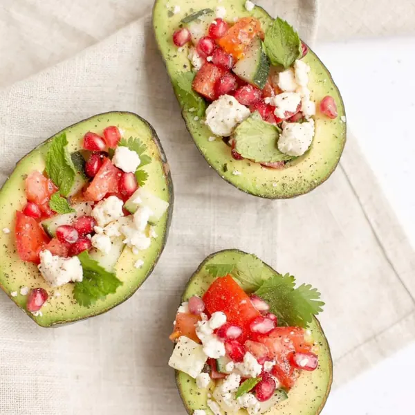
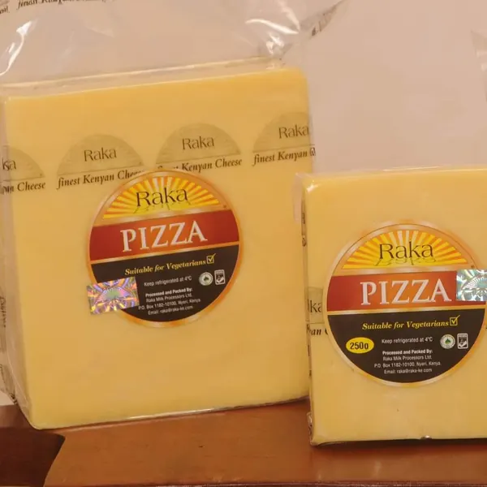
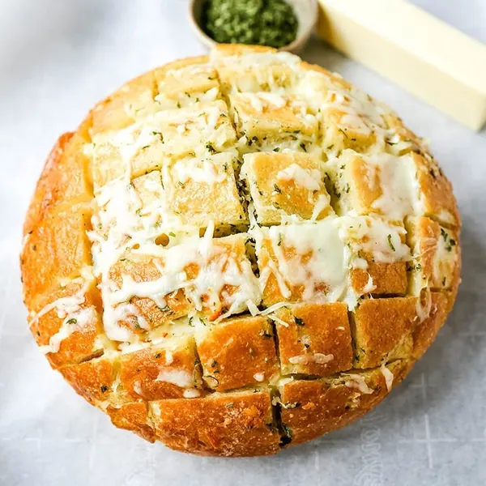
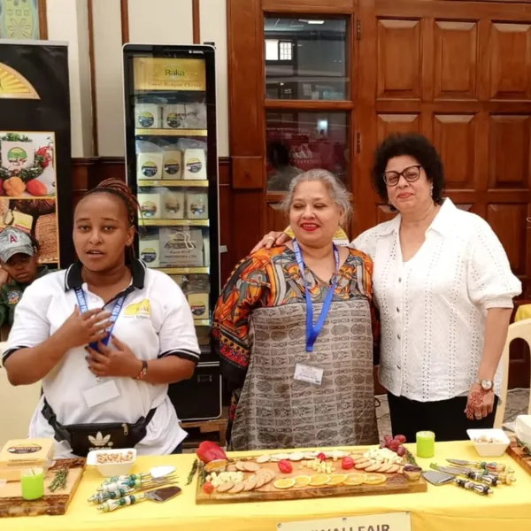

01 / PullPizza night margherita
Our story · 05
Made in the Nyeri highlands.
Raka is two names: RA for Rajesh and KA for Kalpa Padia. They started making cheese in Nyeri in 2001, where cool highland air and good pasture make rich milk.
Twenty-five years on, Kalpa Kapasi Padia still leads the family business, and every Raka cheese is still made for vegetarians.
- 2001First cheese in Nyeri
- 100%Made for vegetarians
- KEBSMarked on every label

Social · 10
Say cheese on social.






